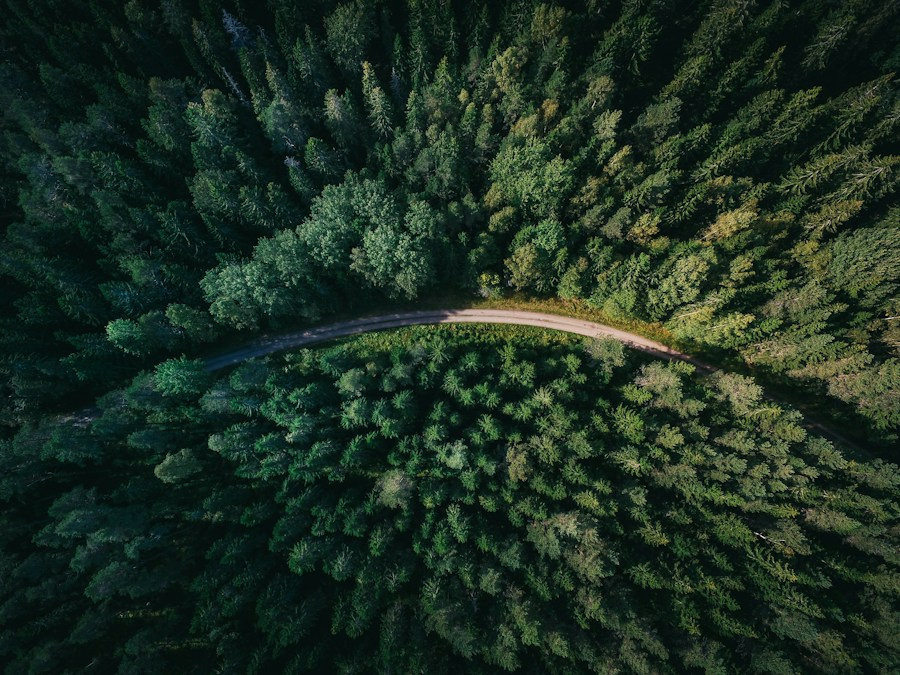
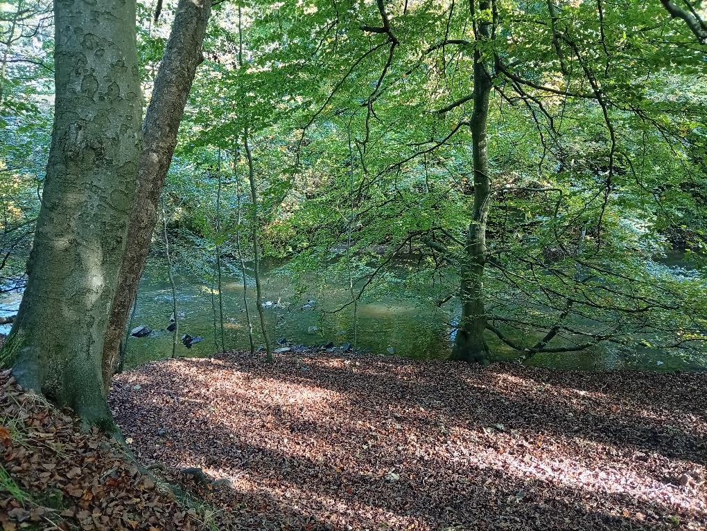

Woodland
Trees of the North
Get to know the familiar trees that shape local parks, paths and woodlands.
A field guide from Manchester
Wander the green corners of Manchester. Meet familiar plants, seek out rare finds, and discover the quiet magic growing just beyond the path.

About Ash
I'm Ash, a 44-year-old man from Manchester with a lifelong appreciation for nature. I created Ash's Nature Guide to share local information about the plants and trees around us, from familiar everyday species to rare finds, accompanied by photographs to help people discover and identify them.

Featured collection

Get to know the familiar trees that shape local parks, paths and woodlands.

A mature beech in woodland at Summerseat, Bury, photographed in autumn 2026.

Spot common blooms and keep an eye out for less familiar local finds.

Look closer at the smaller plants that thrive beneath the woodland trees.
Nature community
Have a plant question, a local sighting, or a photo from a walk? Join the discussion and learn from other nature lovers.
Connecting to the community discussion…
Community comments are hosted by GitHub Discussions. You’ll need a GitHub account to post.
Plant care
“Give your plants gentle light, consistent watering, and room to breathe — nature does the rest.”
“A beautiful home begins with a little greenery, and a little greenery brings a lot of peace.”